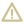
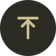
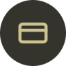

Os 20 ícones do app como arquivo vetorial: 16 de sistema e a família de 4 ações da home. Traço de 1,5 px em 24, pontas e junções redondas, champagne #CCC290 sobre warm-black #21211C. Para conceitos fora desta lista, o complemento é Phosphor bold — nunca um segundo desenho autoral.
Procedência. Os 20 ícones foram extraídos vetorialmente do design system oficial da Zeom (página “Ícones · o set que já temos”): a geometria é a do produto, não uma reinterpretação. Traço 1,5px, pontas e junções redondas, champagne #CCC290.
Traço1,5 a 2 px em 24. Uniforme, sem afinar em nenhum ponto.
TerminaçõesPonta e junção redondas, sem preenchimento. Marcas de terceiros são a exceção.
CorChampagne #CCC290 em uso ativo; #6C664E para estado inativo.
FallbackPhosphor bold para o que o set não cobre, na mesma cor e peso visual.
Sistema
16 ícones
Navegação, estado e comunicação. Cobrem toda a interface fora da home. Geometria extraída vetorialmente do design system oficial da Zeom — página “Ícones · o set que já temos”.
Setanavegação e retornoseta
Transferirenvio entre contastransferirChevronavançar e expandirchevronFechardispensar e cancelarfechar
SinonotificaçõessinoOlhomostrar e ocultar valorolho
Enviarenvio de mensagemenviarPerfilconta e identidadeperfil
Globoconta global e moedaglobo
Cartãocartão físico e virtualcartaoCadeadosegurança e bloqueiocadeadoChatatendimento humanochatEstrelafavoritos e destaqueestrela
Escudoproteção e complianceescudo

Alertaatenção e erroalertaSairencerrar sessãosair
Ação
4 ícones · família única
Os quatro atalhos da home, extraídos do design system oficial: linha ascendente para investir, arco com seta para resgatar, e o par depositar / sacar espelhado na linha de base.
Investiraplicar em ativoinvestirResgatarretirar de ativoresgatarDepositarentrada de recursodepositar
Sacarsaída de recursosacar
Aplicação
círculo champagne e negativo
Em superfície elevada o ícone vai dentro de círculo: champagne com glifo warm-black para ação primária, card #34342D com glifo champagne para apoio.


Escalas
20 · 24 · 32 · 48 · 64
O traço é fixo em proporção: o ícone escala inteiro, nunca só o contorno.
20
24
32
48
64
Marca
esfera armilar
A esfera armilar é a marca, não um ícone: meridiano, equador e eclíptica em champagne sobre warm-black, dentro de placa de cantos arredondados. Arte oficial extraída do design system do produto — ícone do app, splash, gatilho da IA e centro do cartão.
Ícone com placaapp e splashzeom-icone.svgEsfera soltasobre superfície escurazeom-esfera-512.png
Logotipos das plataformas, extraídos do arquivo oficial do cliente. Preenchidos por natureza — não seguem a gramática de traço do set, e cada rede tem regras próprias de proporção e respiro.